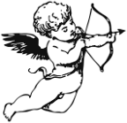
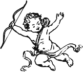

Animation & Motion Design:
Bringing Ideas to Life
Animation has always been an essential part of my creative journey as a designer. It lets me craft engaging, dynamic experiences that bring ideas to life in ways static visuals can’t. Whether through 3D modeling, motion graphics or visual effects, I use animation to tell compelling stories, enhance user experiences and push the boundaries of digital design.
HealthyHand Teaser (2026)
Tools: Blender & After Effects
A cinematic 3D launch teaser for HealthyHand, combining playful animation, dynamic camera movements and branded visual storytelling to introduce the platform and build excitement for its launch.
HealthyHand Reel (2026)
Tools: After Effects
A vertical Instagram Reel and TikTok in a sky, sticker-collage style: real app screens and die-cut paper stickers slap on and wobble in stop-motion over drifting clouds, cut to the beat of the soundtrack.
CTMD Studio Introduction (2020)
Tools: After Effects, Photoshop
A sleek, high-impact introduction animation for CTMD Studio, combining smooth transitions, bold typography and layered motion graphics to establish a strong brand presence.
Rotating Orb (2024)
Tools: After Effects
A mesmerizing loop of an orb in constant rotation, experimenting with fluid motion, light refraction and textural depth to create a hypnotic visual experience.
Each of these projects reflects my passion for movement, storytelling and interactive engagement. Animation is more than a skill: it’s how I bring creative visions to life, bridging the gap between design and emotion.